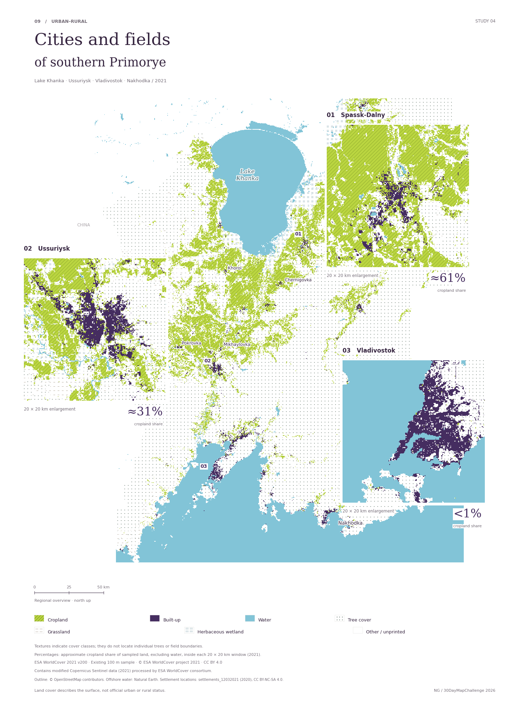

09 Urban-rural
Cities and fields.
Southern Primorye · from Lake Khanka to the coast
What surrounds the cities of southern Primorye?

Behind the map
One landscape, several ways of inhabiting it
Created with Python and AI-assisted scripting. The collage combines an existing land-cover sample with settlement locations. Its geographic basis is WorldCover 2021 version 200, represented through a retained 100-metre nearest-neighbour sample. All three square enlargements use the same scale and WGS 84 / UTM zone 52N coordinates.
How to read it. Follow the agricultural landscape from Lake Khanka towards Ussuriysk, then compare it with the coast. Match numbers 01–03 to the overlapping enlargements. Dots identify tree cover; short strokes identify grassland; paired strokes identify herbaceous wetlands. Khorol, Chernigovka, Pokrovka and Mikhaylovka locate settlements within the regional landscape.
A comparable example. The approximately 61% and less-than-1% labels compare cropland among sampled land cells in the Spassk-Dalny and Vladivostok windows after permanent water is removed. They are rounded sample estimates for the same year and window size. Try the comparison first with water included visually, then read the land-only figure: the choice of denominator changes what a comparison means.
Limits. This is a broad cover map for 2021. Sampling and display generalisation omit small features. Tree cover does not establish a forest's legal category or use; cropland does not identify crops, yields or food supply. Land cover does not assign official urban or rural settlement status. No change over time is measured. Settlement coordinates come from a dataset released in 2021 with a general 2020 reference period and some earlier records; no population figures are shown.
Sources, data and licence
- Land cover: European Space Agency WorldCover consortium, WorldCover 10 m 2021 v200, Zanaga and colleagues (2022), source access and attribution, Creative Commons Attribution 4.0 International. Nominal source resolution: 10 metres; this map uses an existing 100-metre sample. © ESA WorldCover project 2021 / Contains modified Copernicus Sentinel data (2021) processed by ESA WorldCover consortium.
- Settlement locations: Center for Advanced Governance, Settlements of Russia: population and geographic coordinates, release 12 March 2021. Only names and locations are used; population attributes are excluded. Creative Commons Attribution–NonCommercial–ShareAlike 4.0 International.
- Study-region outline: retained geometry of OpenStreetMap relation 151225, © OpenStreetMap contributors, Open Database License 1.0. It limits the thematic drawing; it is not presented as a current legal-boundary survey.
- Offshore context: existing Natural Earth 1:10 million land geometry, public domain. Source-sample gaps offshore are shown as water only where that geometry establishes no land.
- Reusable material: selected locations, retained region outline, saved class counts and method notes. Files retain their separate source licences, identified inside the archive.
Cartographic design: NG Cartography, Creative Commons Attribution–NonCommercial–ShareAlike 4.0 International. Source data retain their own terms. The SVG contains embedded map rasters, vector clipping and marks, and lettering converted to paths; no font software is embedded. Text is not editable as ordinary text. The PNG also serves as the lightweight page preview.